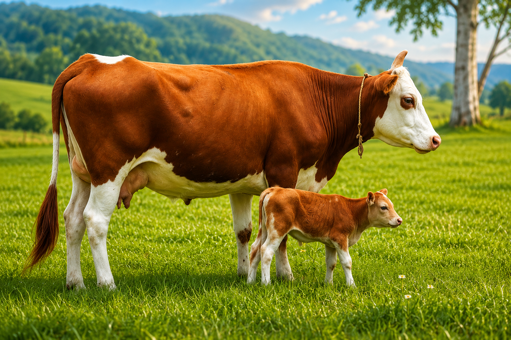
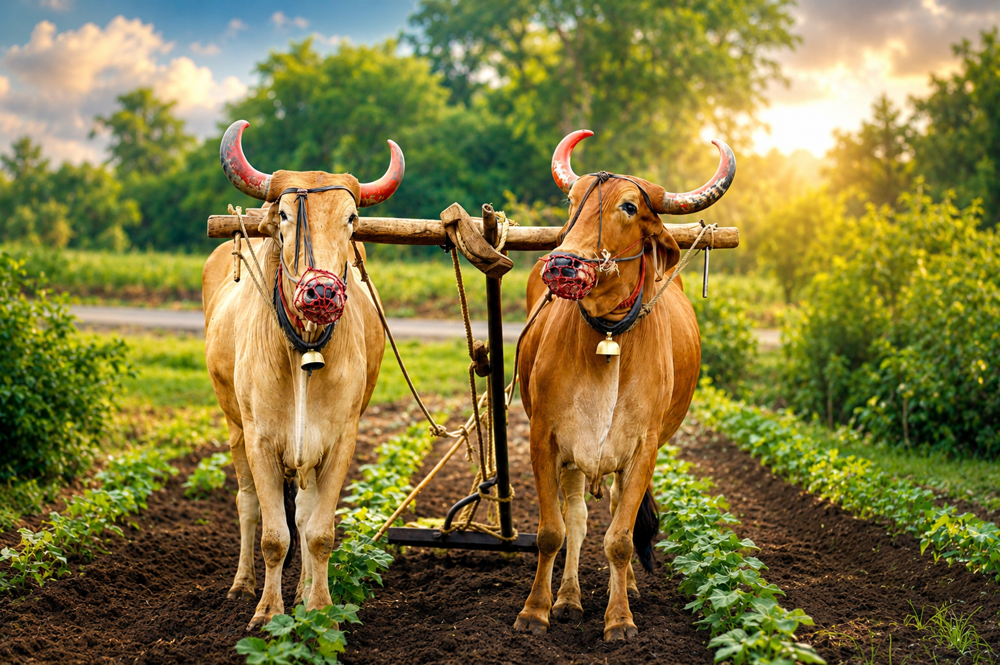
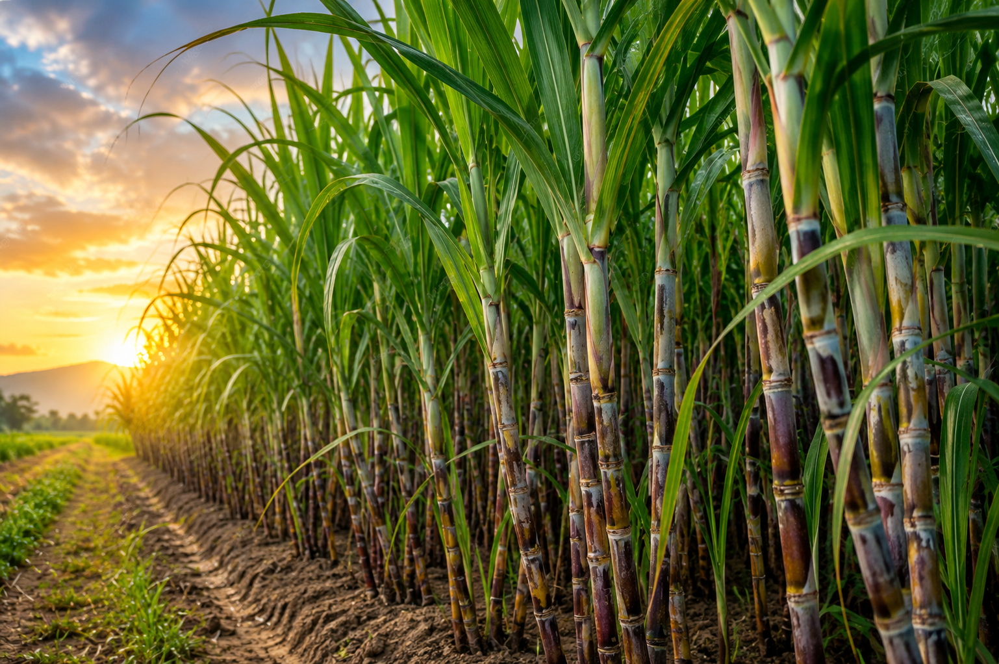

01
Farming
Cultivation begins with attention to the crop, the soil, and the season.
FAMILY OWNED · FARM GROWN
A family-owned farm dedicated to growing quality crops through care, tradition, and a lasting connection to the land.
FARM WEATHER
Loading live weather...

OUR STORY
GRL FARMS is built around a simple idea: good farming starts with care. The land, the crops, the seasons, and the people who look after them are all part of the story.
With family at its heart, the farm brings a thoughtful approach to cultivation while staying close to the traditions that make farming meaningful.
THE FARMING JOURNEY
Use these spaces to tell the real story of how GRL FARMS is cultivated, cared for, and grown.
Cultivation begins with attention to the crop, the soil, and the season.

A space to document the farm's irrigation approach and water practices.

The rhythm of planting, growing, and harvesting is at the heart of farm life.

A place to share responsible practices that care for the land.
LIFE AROUND THE FARM
From the fields to the farmyard, animals are an important part of the everyday life and character of GRL FARMS.

Part of the everyday life around the farm.

A traditional presence in rural farming life.

Part of the farm's natural and rural landscape.

A familiar companion around the farm.
WHAT WE GROW

A central crop for the farm, cultivated with care and attention to the land.

Add your seasonal crops here.

Add your fruits and vegetables here.
WHAT WE GROW
GRL FARMS is a diversified family farm growing field crops, vegetables, leafy greens, fruits, and farm fodder across the seasons.
FIELD CROPS
A major field crop grown at GRL FARMS.
Seasonal field crop cultivated on the farm.
A seasonal grain crop grown on the farm.
A pulse crop cultivated as part of the farm's seasonal rotation.
A pulse crop grown as part of the farm's diverse cultivation.
A seasonal crop grown across the farm.
A field crop cultivated at GRL FARMS.
VEGETABLES & GREENS
Fresh coriander grown seasonally at the farm.
Fresh green chillies cultivated on the farm.
A selection of leafy greens grown according to the season.
FRUIT ORCHARD
OUR FARM
Alongside our crops and fruits, GRL FARMS is supported by natural farm resources that are part of the landscape.
A pond forms part of the farm's natural landscape and water resources.
A well is one of the farm's water resources supporting agricultural activities.
Green grass adds to the farm landscape and provides farm fodder.
THE GRL WAY
Agriculture built around family, care, and dedication.
A thoughtful approach to cultivation and quality produce.
Respect for the land and the environment that sustains it.
Traditional knowledge together with modern thinking.
FROM THE FARM
Replace these images with your real farm photographs.
COME CLOSER TO THE LAND
Experience the farm, the landscape, and the work that goes into every season.
LET'S CONNECT
Have a question, want to visit, or simply want to know more about the farm?